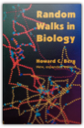
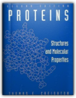
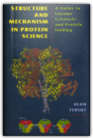
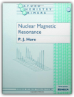
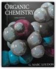
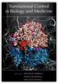
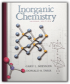
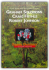

|
Molecular Biology of the Cell, Fourth Edition

Random Walks in Biology

Howard C. Berg
This book is a lucid, straightforward introduction to the concepts and techniques of statistical physics that students of biology, biochemistry, and biophysics must know. It provides a sound basis for understanding random motions of molecules, subcellular particles, or cells, or of processes that depend on such motion or are markedly affected by it. Readers do not need to understand thermodynamics in order to acquire a knowledge of the physics involved in diffusion, sedimentation, electrophoresis, chromatography, and cell motility—subjects that become lively and immediate when the author discusses them in terms of random walks of individual particles.
Introduction to Protein Structure

Protein NMR Spectroscopy, Second Edition: Principles and Practice

Important new techniques and applications of NMR spectroscopy have emerged since the first edition of this extremely successful book was published in 1996. The second edition includes new sections describing measurement and use of residual dipolar coupling constants for structure determination, TROSY and deuterium labeling for application to large macromolecules, and experimental techniques for characterizing conformational dynamics. In addition, the treatments of instrumentation and signal acquisition, field gradients, multidimensional spectroscopy, and structure calculation are updated and enhanced. Protein NMR Spectroscopy is written as a graduate-level textbook and will be of interest to biochemists, chemists, biophysicists, and structural biologists who utilize NMR spectroscopy or who wish to understand the latest developments in this field. · Provides an understanding of the theoretical principles important for biological NMR spectroscopy · Demonstrates how to implement, optimize and troubleshoot modern multi-dimensional NMR experiments · Allows for the capability of designing effective experimental protocols for investigations of protein structures and dynamics · Includes a comprehensive set of example NMR spectra of ubiquitin provides a reference for validation of experimental methods HIGH-RESOLUTION NMR TECHNIQUES IN ORGANIC CHEMISTRYTETRAHEDRON ORGANIC CHEMISTRY SERIES VOLUME 19

Proteins: Structures and Molecular Properties

Thomas E. Creighton
In one convenient resource, Creighton's landmark textbook offers an expert introduction to all aspects of proteins—biosynthesis, evolution, structures, dynamics, ligand binding, and catalysis. It works equally well as a reference or as a classroom text.
Structure and Mechanism in Protein Science: A Guide to Enzyme Catalysis and Protein Folding

Alan Fersht
Fersht's Structure and Mechanism in Protein Science is a defining exploration of this new era, an expert depiction of the core principles of protein structure, activity, and mechanism as understood and applied today. A thorough recasting of Fersht's previous text, the book takes a more general look at mechanisms in protein science, emphasizing the unity of concepts in folding and catalysis and the importance of the relationships between basic chemistry, kinetics, thermodynamics, and structure.
Introduction to Quantum Mechanics

Genetics: Analysis of Genes and Genomes

Nuclear Magnetic Resonance

P. J. Hore
Nuclear magnetic resonance spectroscopy is an enormously powerful and versatile physical method for investigating the structure and dynamics of molecules. This text provides a clear, concise introduction to the physical principles of NMR, and the interactions that determine the appearance of NMR spectra. It describes and explains how nuclear spins interact with a magnetic field (the chemical shift) and with each other (spin-spin coupling); how NMR spectra are affected by chemical equilibria (exchange) and molecular motion (relaxation); and concludes with an outline of the workings of some simple one- and two-dimensional Fourier transform NMR experiments. The ways in which NMR may be used to study the structures, motions and reactions of molecules are illustrated and discussed. Only essential mathematics and theory are presented. The emphasis throughout is on understanding the basic principles.
NMR: The Toolkit

Part A (chapters 1-6) starts with the vector model, and proceeds to the more powerful product operator formalism. Part B (chapters 7-10) shows how straightforward quantum mechanics can be used to understand NMR and product operators at a more fundamental level. The treatment builds on material in P.J. Hore's OCP 32, Nuclear Magnetic Resonance, but it can also be used as a stand-alone text. Organic Chemistry

G. Marc Loudon
With more than twenty-five years of teaching experience, Professor Loudon understands where students most often encounter roadblocks. This edition includes many learning aids designed to help develop a true understanding of organic reactivity. Organic Chemistry continues to provide clear and accurate explanations of the material, incorporating examples that use a wide range of interesting environmental, biological, and industrial applications.
Translational Control in Biology And Medicine

Michael B. Mathews, Nahun Sonenberg, John W. B. Hershey
The new edition of this successful monograph has been both updated and broadened. Since the previous (second) edition was published in 2000, the structures of the bacterial and eukaryotic ribosomes have been published, advancing our basic understanding of translation and mechanisms involving protein and RNA regulators. In addition, as the title indicates, this edition has a new focus on the role of translational control in human development and disease. This book, with 30 chapters written by experts in the field, is essential reading for anyone interested in the process of translation, its regulation, and how its failure can be the cause of disease. Related Titles from the Publisher Translational Control of Gene Expression
Inorganic Chemistry

Gary L. Miessler, Donald A. Tarr
A brief, reader-friendly survey of inorganic chemistry. Uses a molecular-orbital approach to explain structure and reactivity. Features strong coverage of molecular symmetry/group theory. Includes special topics such as bioinorganic, environmental inorganic, organometallic, and solid-state chemistry. Applications show the relevance of core material to problems of contemporary interest. For anyone needing a brief introduction to inorganic chemistry.
Advanced Organic Chemistry: Reactions and Mechanisms

Fundamentals of Biostatistics

Organic Chemistry

Organic Chemistry, Study Guide and Solutions Manual

T. W. Graham Solomons, Craig Fryhle
On the cover of this book is a Pacific yew tree, found in the ancient forests of the Pacific Northwest. The bark of the Pacific yew tree produces Taxol, found to be a highly effective drug against ovarian and breast cancer. Taxol blocks mitosis during eukaryotic cell division. The supply of Taxol from the Pacific yew tree is vanishingly small, however. A single 100-year-old tree provides only about one dose of the drug (roughly 300 mg). For this reason, as well as the spectacular molecular architecture of Taxol, synthetic organic chemists fiercely undertook efforts to synthesize it. Five total syntheses of Taxol have thus far been reported. Now, a combination of isolation of a related metabolite from European yew needles, and synthesis of Taxol from that intermediate, supply the clinical demand. This case clearly demonstrates the importance of synthesis and the use of organic chemistry. It's just one of the many examples used in the text that will spark the interest of students and get them involved in the study of organic chemistry!
Organometallic Chemistry

|


My Library
Collection Total:
1320 Items
1320 Items
Last Updated:
Apr 14, 2013
Apr 14, 2013
 Made with Delicious Library
Made with Delicious Library